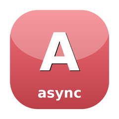

🍬 SugarAsync
Shared async vocabulary for ReactPHP

Shared async vocabulary unifying ReactPHP usage across the SugarCraft monorepo: a CancellationSource owns the mutable flag and its cancel() trigger while consumers hold a read-only CancellationToken, Subscription handles make disposal uniform (compose() gathers many into one), and the AsyncOps helpers cover timeout and deadline ceilings, retry with jittered backoff and a total budget, single-flight coalescing, debounce and throttle timers, all/race fan-in, and a pending-notice combinator — plus a bounded TTL AsyncCache that coalesces in-flight loads.
Install
composer require sugarcraft/sugar-asyncQuickstart
use SugarCraft\Async\{AsyncOps, CancellationSource};
$source = CancellationSource::new();
// Attach a cancellation callback
$source->token()->onCancel(function (): void { echo "Cancelled!\n"; });
$source->cancel(); // prints "Cancelled!"
// Timeout wrapper
$loop = \React\EventLoop\Loop::get();
$somePromise = \React\Promise\resolve('eventually');
$promise = AsyncOps::withTimeout($loop, $somePromise, 5.0);
// Retry with backoff
$attempts = 0;
$promise = AsyncOps::retry(
function () use (&$attempts) {
if (++$attempts < 3) {
return \React\Promise\reject(new \RuntimeException('transient failure'));
}
return \React\Promise\resolve('succeeded on attempt ' . $attempts);
},
attempts: 3,
baseBackoffSeconds: 0.5,
);What's in the box
CancellationTokenRead-only view of a cancellation state. Consumers observe isCancelled() and register onCancel() callbacks; the trigger methods are @internal-tagged but public, so restriction is by convention, not visibility — do not hand tokens to untrusted code.
CancellationSourceOwns the mutable cancellation flag. Create via CancellationSource::new(). Call cancel() to flip the flag and fire all registered callbacks.
Cancellable interfaceContract for components that can be cancelled. Implemented by CancellationSource. Callbacks fire exactly once, even on repeated cancel() calls.
Subscription interfaceDisposal handle returned by onCancel(), debounce(), and throttle(). unsubscribe() disposes the subscription; isActive() reports whether it is still live.
Subscriptions::compose()Combine multiple subscriptions into a single atomic handle. Calling unsubscribe() on the composite disposes all underlying subscriptions.
AsyncOps::withTimeout()Wrap a promise with a timeout. Rejects with TimeoutException if the timeout fires before the promise settles.
AsyncOps::retry()Runs an operation up to N times in total with exponential backoff — attempts: 3 means three runs, not three retries. Respects CancellationToken — cancelling aborts remaining attempts.
AsyncOps::debounce()Wrap a callable so only the last call within the window fires, after silence.
AsyncOps::throttle()Wrap a callable so it fires at most once per interval; suppressed calls resolve null — visible in the promise chain, never silently dropped. With trailing: true the last suppressed call fires at window end.
AsyncOps::withDeadline()Budget-aware ceiling: rejects with TimeoutException on expiry and cancels the inner operation so no late result is ever adopted; the optional onTimeout hook gets one shot at aborting server-side work.
AsyncOps::cancellable()Guards a promise with a token: cancellation rejects the guard with OperationCancelledException and runs the onCancel cleanup hook; the registration un-registers itself when the inner promise settles.
AsyncOps::singleFlight()Coalesces concurrent same-key calls into one in-flight worker — one round-trip per key, every caller receives the outcome. Stateful: never share a singleFlight closure across a pcntl_fork boundary.
AsyncOps::all() / race()Fan-in helpers: all() waits for every promise (empty input resolves to []); race() adopts the first settled outcome (empty input throws InvalidArgumentException at the call site).
AsyncOps::onPending()Fires a progress hook when a promise is still unsettled after N seconds — a spinner signal for slow calls; the promise itself passes through untouched.
AsyncCacheTTL'd async memo: fetch(key, loader) coalesces in-flight loads, serves fresh entries instantly, optionally serves stale on loader failure, with an LRU entry cap.
SuspendedA paused command as data: a resume closure paired with its state. resume() hands the Cmd closure to the resumer exactly once — a second call yields null, never a double-fire.
CallbackSubscriptionThe disposable handle onCancel() and Subscriptions::of() hand out: unsubscribe() drops a registration that has not fired; handles for work already done are born spent.
Timeout / cancellation exceptionsOperationCancelledException and TimeoutException — plain RuntimeException subclasses; TimeoutException carries seconds() and label() context.
Use it for
- Unified cancellation — replace ad-hoc cancellation scattered across async consumers with one shared pattern; the current dependents census is sugar-forms, sugar-vterm, candy-sql, candy-mail, candy-git-server and candy-codetime.
- Subscription lifecycle ownership — Subscriptions::compose() gathers many disposal handles so teardown can dispose them all atomically (the sugar-core runtime keeps its own internal variant; this is the public standalone one).
- Async operation helpers — withTimeout, retry, debounce, throttle built on top of react/promise and react/event-loop.
Source & demos
- Source on GitHub
- Full README
- Runnable examples
- Original SugarCraft design — no 1:1 Go counterpart.
API
| Class | Method | Description |
|---|---|---|
| CancellationSource | new(): self | Factory: create a new source with its own token |
| CancellationSource | token(): CancellationToken | Returns the read-only token for this source |
| CancellationSource | cancel(): void | Request cancellation. Idempotent. |
| CancellationSource | isCancelled(): bool | Returns true if cancel() has been called |
| CancellationSource | onCancel(callable): Subscription | Registers a cleanup callback on the source's own token (CancellationSource implements Cancellable); same fire-once, handle-un-registers semantics as CancellationToken::onCancel(). |
| CancellationToken | none(): self | Shared never-cancelled sentinel — the safe default for optional token parameters; its onCancel() returns a born-spent handle and retains nothing |
| CancellationToken | isCancelled(): bool | Returns true if the source has been cancelled |
| CancellationToken | onCancel(callable): Subscription | Register a callback; fires immediately if already cancelled (the handle is then born spent). Returns a Subscription — unsubscribe() before the token fires un-registers the callback, which is the leak guard when a token outlives the operation that registered on it. |
| Cancellable | isCancelled() · cancel() · onCancel(callable) | Interface CancellationSource implements — type against it when a component must be cancellable |
| Subscription | unsubscribe(): void | Interface: disposes the registration; the removal closure runs at most once, from unsubscribe() |
| Subscription | isActive(): bool | Interface: false once unsubscribed, or born spent |
| CallbackSubscription | of(Closure): self | Live handle over a removal closure — the concrete Subscription onCancel() returns |
| CallbackSubscription | settled(): self | Born-spent handle (the callback already fired immediately); unsubscribe() is a no-op |
| Subscriptions | new(): self | Empty composite collection |
| Subscriptions | of(Closure): Subscription | Public glue: mints a standalone disposal handle from any cleanup closure (timers, listeners, temp-file owners) |
| Subscriptions | compose(Subscription ...): self | Combine multiple subscriptions into one atomic handle |
| Subscriptions | add(Subscription): void | Append one handle to the composite — the @internal path compose() builds through: on an already-unsubscribed composite an incoming handle is disposed immediately, and self-composition is ignored |
| Subscriptions | unsubscribe(): void | Dispose all underlying subscriptions |
| Subscriptions | isActive(): bool | Returns false after unsubscribe() |
| Subscriptions | count(): int · isEmpty(): bool | Size of the composite |
| Subscriptions | disposeAll(): void | @internal teardown worker behind unsubscribe(): snapshot-and-clear first, then dispose every handle; a throwing unsubscribe() is logged via error_log() (stderr by default, no logger-injection seam), never propagated — the same hook-failure contract as CancellationToken::fireCallbacks() |
| AsyncOps | withTimeout(?LoopInterface, PromiseInterface, float, ?string label): PromiseInterface | Wrap a promise with a timeout; rejects with TimeoutException (seconds and optional label readable on it); null loop uses the shared one |
| AsyncOps | withDeadline(?LoopInterface, PromiseInterface, float, ?callable onTimeout, ?string label): PromiseInterface | Ceiling on the remaining budget: on expiry rejects with TimeoutException and cancels the inner promise; late results are dropped, never adopted |
| AsyncOps | cancellable(PromiseInterface, ?CancellationToken, ?callable onCancel): PromiseInterface | Token guard: cancellation rejects with OperationCancelledException and runs the onCancel hook; the registration auto-un-registers when the inner promise settles — no loop parameter |
| AsyncOps | singleFlight(callable keyFn, callable worker): callable | Coalesces concurrent same-key calls into one in-flight worker; stateful — never share across pcntl_fork |
| AsyncOps | retry(operation, attempts: 3, baseBackoffSeconds: 0.1, token:, maxTotalSeconds:, jitter: 0.0, loop:, now:, onRetry:): PromiseInterface | Retries a thunk with exponential backoff; a cancelled token stops the remaining attempts (reject OperationCancelledException); maxTotalSeconds rejects with TimeoutException on budget exhaustion; onRetry fires before each backoff sleep and its errors are logged via error_log() (stderr by default, no logger-injection seam), never propagated |
| AsyncOps | all(iterable): PromiseInterface | Fan-in on every promise; empty input resolves to [] |
| AsyncOps | race(iterable): PromiseInterface | Adopts the first settled outcome; empty input throws InvalidArgumentException at the call site |
| AsyncOps | onPending(PromiseInterface, float, ?callable onPending, ?LoopInterface, ?string label): PromiseInterface | Fires the hook if the promise is still unsettled after N seconds; the promise passes through untouched |
| AsyncOps | debounce(callable, float, ?LoopInterface, ?CancellationSource): Debounced | Debounce wrapper returning a Debounced handle; only the last call fires after the window; optional source cancels it |
| AsyncOps | throttle(callable, float, ?LoopInterface, bool trailing): Throttled | Throttle wrapper returning a Throttled handle; fires at most once per interval, trailing edge opt-in |
| Debounced | __invoke(...) · flush() · isPending() · unsubscribe() · isActive() | Handle AsyncOps::debounce() returns: invoke to (re)schedule, flush() runs the pending call now (answers null with nothing pending), unsubscribe() drops it |
| Throttled | __invoke(...) · isPending() · unsubscribe() · isActive() | Handle AsyncOps::throttle() returns (no flush — trailing behavior is the trailing: flag) |
| Suspended | new(callable resume, mixed state = null) · resume(): ?Closure · state(): mixed | Paused command as data; resume() yields the Cmd closure exactly once (a second call returns null) |
| AsyncCache | new(ttlSeconds: 60.0, serveStaleOnError: false, ?clock, ?maxEntries): self | TTL'd async memo; injectable clock for tests; optional stored-key cap with eviction (>= 1 when set) |
| AsyncCache | fetch(string key, callable loader): PromiseInterface | Fresh entry resolves instantly; otherwise the loader starts — concurrent same-key fetches coalesce; a synchronous throw counts as a failed load |
| AsyncCache | peek(string): mixed · has(string): bool · isFresh(string): bool | Render-path reads: last stored value (fresh or stale), a value is held, a held value is within TTL |
| AsyncCache | isLoaded(string): bool · ageSeconds(string): ?float | Fresh OR in-flight (the loading-indicator read); monotonic age of the held value, past the TTL on purpose |
| AsyncCache | invalidate(string): void · clear(): void | Drop a key / every entry and supersede in-flight loads — displaced arrivals resolve their own callers without adopting into the store |
| AsyncCache | count() · keys() · ttlSeconds() · servesStaleOnError() · maxEntries() · withTtl() · withServeStaleOnError() · withMaxEntries() | Introspection over stored keys (fresh or stale, insertion order) and settings; the with* setters return new handles over the same store |
| OperationCancelledException | (extends RuntimeException) | Rejection when a token-guarded operation is cancelled — cancellable(), and a token cancelled mid-retry |
| TimeoutException | seconds(): ?float · label(): ?string | Rejection from withTimeout(), withDeadline(), and retry()'s maxTotalSeconds budget; carries the budget and optional label for message building |